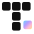

TMV LabsКейсы
Твой бизнес отвечает клиентам, даже когда ты спишь
21 год в технике, свой магазин и сервис. Сначала проверяю ботов и автоматизацию на своём бизнесе, потом внедряю тебе.
Обсудить проект в Telegram
Опиши задачу за 2 минуты. Отвечу в тот же день со схемой и ценой.
ЛистайСообщения отовсюдуБот отвечаетЗаявка у тебя
Новая заявка
Откуда: Авито
Клиент: «Есть в наличии? Заберу сегодня»
Бот ответил: цена, наличие, адрес
Ответ ушёл ночью, ты спал